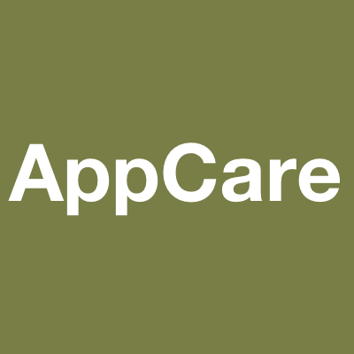
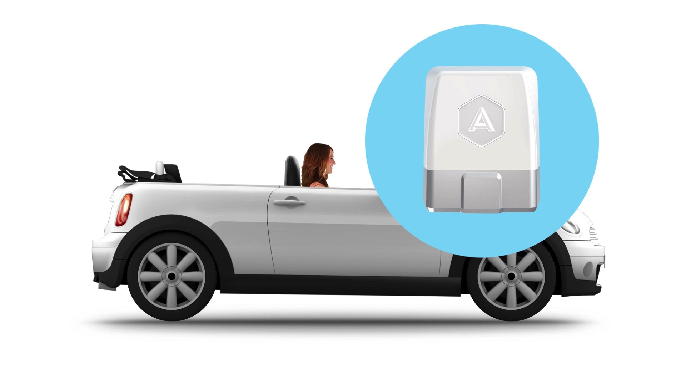
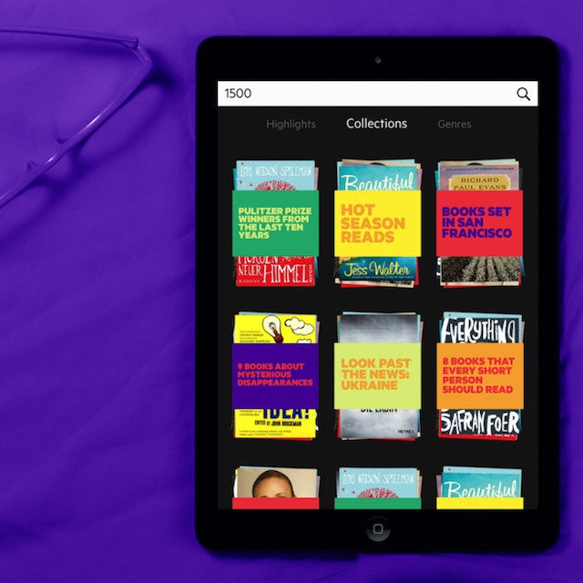
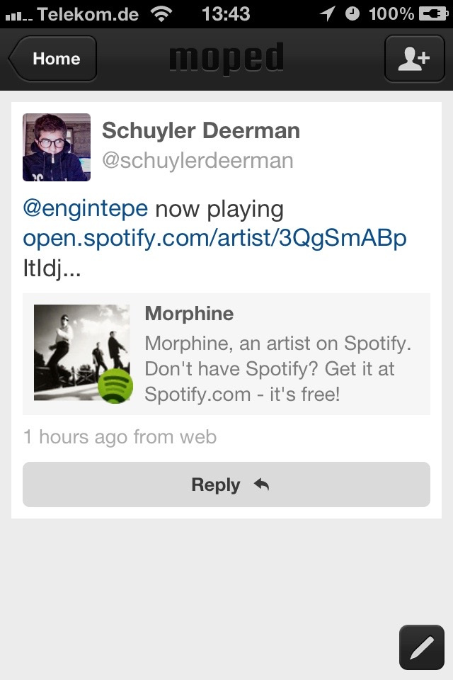
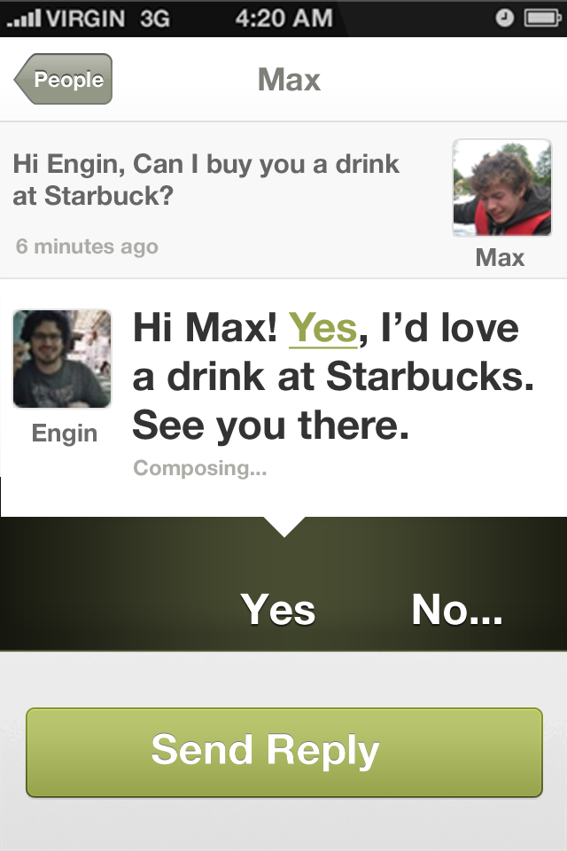

Here is a list of selected projects I’ve been lucky enough to be involved with in the recent years:
UIKonf
Organizer
UIKonf is one of the top iOS conferences in the world. I’ve been organizing it with Sabine Geithner and Maxim Zaks.
AppCare
Founder

AppCare is a subscription service for app maintenance. For a fixed monthly fee our experienced developers make sure that your app stays in shape and keeps on fulfilling its role in your business.
Automatic
iOS development

I have helped Automatic with their brand-new soon-to-be-released iOS App. Quite a complex project written from the ground up, which must be able to handle everything from bluetooth connections to the dongles to UI animations. We used Reactive Cocoa and MVVM to keep the complexity managable
JUKE
iOS development
Mediamarkt/Saturn had acquired the technology behind the JUKE app from a previous vendor that had gone bankrupt. I helped them to make sense of the big legacy codebase and create the JUKE e-Books app and release it on the App Store. This allowed them start selling books from their catalog of over 1.5 million titles and start making revenue in a very short time.
KeepSafe
Infomation Hiding R&D, iOS development

KeepSafe was investigating novel methods to prevent users from misusing the photos they had received from other users. We worked on a various information hiding schemes to discourage screenshots and prototyped a subjective evaluation app. This allow them to quickly figure out which settings for the algorithms worked best for different types of content.
Blloon
Technical co-founder

At Blloon, we built an e-book subscription platform, where the users received a certain amount of pages every month, which they could spend on any book from the almost 1 million titles in the catalog. I had the pleasure to work with the design experts from EdenSpiekermann and learned a lot from them. Unfortunately the business assumptions did not work out and we had to close the service.
Moped
First iOS engineer, mobile product

Moped was a messaging service which integated with the internet. @-mentioning other users, hashtagging topics, previewing links, showing inline audio and video. It was a poor-man’s Slack back in 2012. Unfortunately, we did not manage to gather enough traction before the money ran out.
Pistachio
Technical co-founder

Pistachio started out in 2010 a spontaneous social network, where people could broadcast their free-time for the next few hours and get matched with their friends or friends-of-friends around the area for a coffee or a drink.